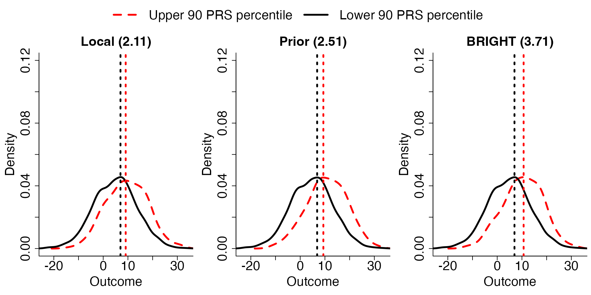

BRIGHT
Qinmengge Li
5/1/2023
BRIGHT.RmdIntroduction
PRS is a widely used tool for genetic risk prediction, but its performance is limited in minority populations. This motivates the development of a transfer learning procedure to leverage knowledge from well-studied majority populations. However, the lack of individual-level data access poses a challenge. To address this, we propose a privacy-preserving technique called BRegman divergence-based Integrational Genetic Hazard Trans-ethnic (BRIGHT).
BRIGHT is implemented in the software package BRIGHT, which offers two versions of the model: BRIGHTi and BRIGHTs. BRIGHTi integrates individual-level data from the target minority population and either summary-level or individual-level data from the prior majority population. In comparison, BRIGHTs integrates summary-level data from target minority population, ensuring privacy protection. Both versions of BRIGHT support general penalty structures for fine mapping of genetic markers.
By using BRIGHT, researchers can overcome the limitations of single-ethnic PRS and improve prediction accuracy for minority populations. The package provides a valuable tool for transferring knowledge and optimizing the integration of information between populations with heterogeneous genetic backgrounds.
To summarize, BRIGHT estimation procedure utilize Bregman-divergence to measure the difference between the populations and optimally balance the information from them. The method enjoys the following properties :
- it controls the relative weight of the external information, identifying the most compatible ones and diminishing the weights of less relevant ones;
- it is robust to model misspecification and incorporates various types of external risk scores, including risk scores derived from different statistical models or built upon different outcomes;
- it accommodates that the covariate space may be different between data sources;
- less sensitive summary statistics from prior (and target) data sources suffice the model fitting of BRIGHT (BRIGHTs);
- it achieves fine-mapping simultaneously in the process of PRS construction;
- its objective function retains similar forms as the penalized regression and guarantees the computation efficiency;
- it incorporates pLASSO and LASSOsum as special cases.
The detailed BRIGHT model can be found in the Appendix
The BRIGHT estimation procedure allows for the incorporation of various types of individual or summary-level information from the prior majority population in the construction of BRIGHT PRS:
- PRS coefficients (weight file) from the prior majority population.
- GWAS summary statistics from the prior majority population.
- Individual-level data from the prior majority population.
Moreover, the BRIGHT estimation procedure can also incorporate flexible individual-level or summary-level information from the target minority population in the construction of \(\boldsymbol{\hat\beta}\). The specific data requirements for each setting are discussed separately in the following sections.
The flowchart for major functions and the pipeline can be found below.
Alt
Installation
BRIGHT requires the following R packages: Rcpp, Matrix, mvtnorm, BEDMatrix, grpreg. Install them by:
install.packages(c("Rcpp", "Matrix", "mvtnorm", "BEDMatrix", "grpreg"), dependencies=TRUE)For Windows and Mac users, it would be easiest to download the following binaries (Windows, Mac) and install using:
install.packages("/path/to/downloaded_binary_file", repos=NULL)If you are on Linux or you would like to compile from source, you can download the source codes BRIGHT_0.0.1.tar.gz. Mac users should refer to this page for the various dependencies required. Install then via:
install.packages("/path/to/downloaded_source.tar.gz", repos=NULL, type="source")If you have devtools, you can also type:
install_github("To be determined")or
install_github("To be determined")for the latest development version. Or you can clone the latest development version here and install yourself using devtools.
Warning!
Most functions in BRIGHT impute missing genotypes in PLINK bfiles with a homozygous A2 genotype, which is the same as using the --fill-missing-a2 option in PLINK. It is the user’s responsibility to filter out individuals and SNPs with too many missing genotypes beforehand.
Quick Start
In this section, we present a toy example to demonstrate the main functions, basic usage, and output results of the package. This example serves as an introduction to the package’s capabilities, and we will delve into the different versions of BRIGHT and their specific applications in the subsequent sections.
Toy example illustration
First, we load the BRIGHT package:
library(BRIGHT)In the default version of the package, the implemented method is BRIGHTs with quantitative traits, which integrates summary-level information from both the target and prior data. In this section, we will demonstrate the application of this method using a toy example. Let’s load the pre-simulated toy example data for illustration:
data(ToyExample)The toy example contains the summary statistics from both target and prior population and the directory of the PLINK1 file for reference LD construction.
BRIGHT fitting and visualization
The BRIGHT method is fit by using the basic function BRIGHT with LASSO penalty on quantitative traits by default:
out <- BRIGHT(data = dat)out is a list object containing all the information from the fitting of BRIGHT.
Hyperparameter fine-tuning with individual-level validation data
out contains a sequence of models corresponding to different hyperparameters, \(\lambda\) and \(\eta\) pairs. Users would prefer to select the best performance model for the purpose of constructing PRS. Due to only summary statistics being available for the target minority populations, the widely used cross-validation is not applicable for hyper-parameter fine-tuning. Here our package provide two functions for using either individual-level or summary-level validation data to fine-tune hyperparameters. When individual-level validation data is available, users can use Valid.Ind to choose the best performance model:
# Perform validation with individual-level validation data
Val <- Valid.Ind(out, Valipheno, Valigeno)## Extracting number of samples and rownames from SAS2.fam...## Extracting number of variants and colnames from SAS2.bim...## [1] "Best eta based on R2 is 1.833"
## [1] "Best lambda based on R2 is 0.056"
## [1] "Best eta based on MSPE is 1.833"
## [1] "Best lambda based on MSPE is 0.044"Once validation is done evaluation plots can be generated by using Contour.plot functions provided by the package:
# Plot Contour plots
Contour.plot(Val)
# Plot MSPE and R2 plot
MSPE_R2.plot(Val) The plots generated by “MSPE_R2.plot” presents the mean squared prediction error (MSPE) and \(R^2\), measuring calibration and discrimination, for local (squares), prior (triangle), and BRIGHT (lines with circles) with varying \(\eta\) values and \(\lambda\) values. These plots help the user to visualize the local model’s small sample size and prior model’s heterogeneity effect on their recalibration and discrimination performance. The BRIGHT performance associated with varying \(\eta\) and \(\lambda\) values helps to decide how much information should be borrowed from the prior majority data and how many covariates should be chosen in order to achieve optimal performance for BRIGHT.
The plots generated by “MSPE_R2.plot” presents the mean squared prediction error (MSPE) and \(R^2\), measuring calibration and discrimination, for local (squares), prior (triangle), and BRIGHT (lines with circles) with varying \(\eta\) values and \(\lambda\) values. These plots help the user to visualize the local model’s small sample size and prior model’s heterogeneity effect on their recalibration and discrimination performance. The BRIGHT performance associated with varying \(\eta\) and \(\lambda\) values helps to decide how much information should be borrowed from the prior majority data and how many covariates should be chosen in order to achieve optimal performance for BRIGHT.
Then the coefficients from the best performance model can be visualized in the following solution path plots by using function Sol_path_valid.plot:
# Plot solution path containing either best selected eta or best selected lambda
Sol_path_valid.plot(Val,out,highlight=Ground_truth,criteria="R2")## [1] "***" After selecting the criteria, either “R2” or “MSPE”, for model fine-tuning, the solution paths for \(-log(\lambda)\) and \(\eta\) are plot for the best \(\eta\) and \(\lambda\), respectively. Each line corresponds to a covariate (SNPs). The left plot shows the solution path of effect sizes over the change of \(-log(\lambda)\) for a given \(\eta\) (\(\eta=0\) in the above case); the right plot shows the solution path of effect sizes over the change of \(\eta\) for a given \(\lambda\) (\(\lambda=0.353\) in the above case).
After selecting the criteria, either “R2” or “MSPE”, for model fine-tuning, the solution paths for \(-log(\lambda)\) and \(\eta\) are plot for the best \(\eta\) and \(\lambda\), respectively. Each line corresponds to a covariate (SNPs). The left plot shows the solution path of effect sizes over the change of \(-log(\lambda)\) for a given \(\eta\) (\(\eta=0\) in the above case); the right plot shows the solution path of effect sizes over the change of \(\eta\) for a given \(\lambda\) (\(\lambda=0.353\) in the above case).
Hyperparameter fine-tuning with summary-level validation data
However, due to Datashield constraints individual-level validation dataset can be hard to access. Therefore, we provide an alternative validation criteria, approximated MSPE (AMSPE), which only requires summary-level information from validation data. We first read in and present the summary level validation data as well as the Reference LD required for this approximation:
AMSPE is then calculated by executing the Val.Sum function.
# Perform validation with summary-level validation data
Val.Sum <- Valid.Sum(out, ValiIProd, ValiRef)## Extracting number of samples and rownames from SAS2.fam...## Extracting number of variants and colnames from SAS2.bim...## [1] "Best eta based on AMSPE is 0.886"
## [1] "Best lambda based on AMSPE is 0.082"Similar to the individual-level validation approach, we can visualize the validation process by plotting the AMSPE with regards to each hyper-parameter and the coefficients by plotting the solution paths.
# Plot AMSPE plot
AMSPE.plot(Val.Sum)
# Plot solution path containing either best selected eta or best selected lambda
Sol_path_valid.plot(Val.Sum,out,highlight=Ground_truth,criteria="AMSPE")
Model testing based on individual-level testing data
Finally, with the existence of individual-level testing data, we also provide functions to automatically test the performance of the BRIGHT model with comparison to using either data source only.
We present the required format of the individual-level testing data.
#Individual level validation data is available, Valipheno is the PLINK1 .fam format phenotype file, and Valigeno is the directory to the PLINK1 .bed file.
head(Testpheno)## V1 V2 V3
## 1 0 711676 9.415242
## 2 0 711677 20.729158
## 3 0 711679 8.834436
## 4 0 711680 8.004271
## 5 0 711681 -11.331491
## 6 0 711682 -2.485393
head(Testgeno)## [1] "~/Desktop/research/Kevin He/PRS/Rewrite_Lassosum/example/SAS2"Then, model testing can be automatically achieved by executing function Test.Ind function.
# Perform validation with individual-level validation data
Tst <- Test.Ind(Val, Testpheno, Testgeno)## Extracting number of samples and rownames from SAS2.fam...## Extracting number of variants and colnames from SAS2.bim...We provide two plotting functions below for easier visualization of testing results:
# Plot density plot
Density.plot(Tst,Pct=0.9,criteria = "R2")The plots generated by “Density.plot” presents the distribution of continuous traits in test data stratified by a percentile cut-off (Pct) of the local, prior and BRIGHT PRS. These plots further visualize the discrimination power of each PRS model. In the plots, we compare the median distance between the upper and lower percentile PRS stratification of the observed outcome distribution, and show the distance in the title of the plots.
# Plot ROC plot
ROC.plot(Tst,Pct=0.9,criteria = "R2") The plots generated by “ROC.plot” presents the receiver operating characteristic (ROC) curve as well as the area under curve (AUC) measuring the prediction performance of local, prior, and BRIGHT PRS for a given threshold of the continuous traits (Pct).
The plots generated by “ROC.plot” presents the receiver operating characteristic (ROC) curve as well as the area under curve (AUC) measuring the prediction performance of local, prior, and BRIGHT PRS for a given threshold of the continuous traits (Pct).
BRIGHTs with summary-level data: type.trait=“quantitative” (Default)
For quantitative traits, we set \(B_{\widetilde{\boldsymbol\Sigma}}(\boldsymbol{\hat\beta}||\boldsymbol\beta)=(\boldsymbol{\hat\beta}-\boldsymbol{\beta})^\top\widetilde{\boldsymbol\Sigma}(\boldsymbol{\hat\beta}-\boldsymbol{\beta})/n\), \(B_{\widetilde{\boldsymbol\Sigma}}(\boldsymbol{\check\beta}||\boldsymbol\beta)=(\boldsymbol{\check\beta}-\boldsymbol{\beta})^\top\widetilde{\boldsymbol\Sigma}(\boldsymbol{\check\beta}-\boldsymbol{\beta})/n\) and \(\boldsymbol{\hat\beta}=\widetilde{\boldsymbol\Sigma}^{-1}\boldsymbol r\) where \(\boldsymbol r=\frac{\boldsymbol y^\top\boldsymbol X}{n}\) is the marginal SNPs-trait inner product from target minority population, where \(\boldsymbol X\) and \(\boldsymbol y\) are the target genotype matrix and outcome vector respectively. A standardized version, \(\boldsymbol r^*=\frac{\boldsymbol y^{*\top}\boldsymbol X^*}{n}\), can be recovered from GWAS summary statistics with \(\boldsymbol X^*\) and \(\boldsymbol y^*\) being the standardized genotype and phenotype . The above definition of \(B_{\widetilde{\boldsymbol\Sigma}}(\boldsymbol{\hat\beta}||\boldsymbol\beta)\) and \(\boldsymbol{\hat\beta}\) ensures \(B_{\widetilde{\boldsymbol\Sigma}}(\boldsymbol{\hat\beta}||\boldsymbol\beta)\) to be a valid approximation of the OLS loss through \(\widetilde{\boldsymbol\Sigma}\approx\widehat{\boldsymbol\Sigma}\) , which is widely deemed to be true in genetics studies . We note, in this scenario, \(\boldsymbol{\hat\beta}\) is only presented for illustration purposes, the actual implementation does not require the inversion or invertibility of \(\widetilde{\boldsymbol\Sigma}\). The objective function in this case can be reduced to \[\begin{align} Q_{BRIGHTs}(\boldsymbol\beta)&\propto\frac{1}{2}\boldsymbol{\beta}^\top \widetilde{\boldsymbol\Sigma}\boldsymbol{\beta}-\boldsymbol{\beta}^\top\boldsymbol{r}+\eta \left ( \frac{1}{2}\boldsymbol{\beta}^\top \widetilde{\boldsymbol\Sigma}\boldsymbol{\beta}-\boldsymbol{\beta}^\top\widetilde{\boldsymbol\Sigma}\boldsymbol{\check\beta}\right )+p_{\lambda}(\boldsymbol\beta). \label{eq: GWAS objective function} \end{align}\] The above objective function, (), ignoring the penalty term, is of quadratic forms concerning \(\boldsymbol\beta\); therefore, in this package, we efficiently implement the optimization by group coordinate descent algorithm and warm start and active set technique and the computation cost does not exceed penalized linear regression. Furthermore, the BRIGHTs method will reduce to LASSOsum when \(\eta=0\) and \(p_{\lambda}(\boldsymbol\beta)\) is chosen as LASSO penalty.
BRIGHTs methods for quantitative traits utilize a wide variety of summary-level data from different populations to carry out transfer-learning: from the target minority population, BRIGHTs requires the GWAS summary statistics or marginal genotype-trait inner product (\(\boldsymbol r\)/\(\boldsymbol r^*\)), while from the prior majority populations either GWAS summary statistics, marginal genotype-trait inner product, or coefficients estimated from joint models (e.g. PRS or LASSO regression) can be used for model fitting. In addition, \(\boldsymbol{\hat\beta}\) and \(\boldsymbol{\check\beta}\) are only required to contain a subset of markers from the LD reference, \(\widetilde{\boldsymbol\Sigma}\), and no further assumptions are made on the covariate space of \(\boldsymbol{\hat\beta}\) or \(\boldsymbol{\check\beta}\). Summary statistics are expected to be loaded into memory as a data.frame/data.table.
Below we present the required data and implementation tutorials for quantitative traits with summary-level target data, for binary traits please refer to “BRIGHTs”.
First, we load the package and read in the minority summary statistics into R. As discussed, there are two options of summary statistics to be used for minority populations, below we present the two options separately and note in real application only one of the data is required.
library(BRIGHT)The first option of summary-level data for minority population is the marginal inner-product of SNPs and traits
### Read target minority marginal genotype-trait inner product file###
# Read in target GWAS
Tind="IProd"
Tss <- read.table("~/Desktop/research/Kevin He/PRS/Rewrite_Lassosum/example/SAS1.IProd",header = T)
head(Tss)## CHR BP A1 A2 IProd
## 1 1 753405 A C 0.02172325
## 2 1 754192 G A 0.02438882
## 3 1 757640 A G 0.01932536
## 4 1 758626 T C 0.01601668
## 5 1 769223 G C -0.01078045
## 6 1 777122 T A 0.01340563
### Read target minority GWAS summary statistics file###
# Read in target GWAS
Tind="GWAS"
Tss <- read.table("~/Desktop/research/Kevin He/PRS/Rewrite_Lassosum/example/SAS1.GWAS",header = T)
head(Tss)## CHR BP A1 A2 Sign N P
## 1 1 753405 A C 1 1760 0.3624
## 2 1 754192 G A 1 1760 0.3065
## 3 1 757640 A G 1 1760 0.4178
## 4 1 758626 T C 1 1760 0.5019
## 5 1 769223 G C -1 1760 0.6513
## 6 1 777122 T A 1 1760 0.5741We use Tind to indicate the data type being provided to BRIGHTs, it should be either “GWAS” or “IProd”, corresponding to the GWAS summary statistics or the inner product mentioned above. In the provided example case we read in the IProd summary statistics from the target minority data and it contains 5 columns: the “CHR” column is the chromosome name must be from 1 to 22; the “BP” column is the corresponding SNPs position in base pair; “A1” column is the effect allele and “A2” column is the reference allele; the “IProd” column contains the marginal genotype-trait inner product; alternatively, we can also read in the GWAS summary statistics from the target minority data and it contains 7 columns: the “CHR” column is the chromosome name must be from 1 to 22; the “BP” column is the corresponding SNPs position in base pair; “A1” column is the effect allele and “A2” column is the reference allele; “Sign” is the marginal association direction for each SNPs (the sign of the beta coefficients); “N” column is the sample size used for each SNPs from GWAS study; “P” column is the p-value of the T test from GWAS.
Second, we read in the prior majority summary statistics into R. As discussed, there are three options of summary statistics to be used for minority populations, below we present the three options separately and note in real application only one of the data is required for each prior data. We note that more than 1 prior majority data can be incorporated in the BRIGHTs model.
### Read prior majority GWAS summary statistics file more than 1 prior majority data can be read in###
Pind=c("GWAS")
Pss <- read.table("~/Desktop/research/Kevin He/PRS/Rewrite_Lassosum/example/EUR.GWAS",header = T)
head(Pss)## CHR BP A1 A2 Sign N P
## 1 1 753405 A C 1 11514 0.07215
## 2 1 754192 G A 1 11514 0.10150
## 3 1 757640 A G 1 11514 0.10570
## 4 1 758626 T C 1 11514 0.09299
## 5 1 769223 G C -1 11514 0.09536
## 6 1 777122 T A 1 11514 0.05061
### Read prior majority marginal genotype-trait inner product more than 1 prior majority data can be read in###
Pind=c("IProd")
Pss <- read.table("~/Desktop/research/Kevin He/PRS/Rewrite_Lassosum/example/EUR.IProd")
head(Pss)## V1 V2 V3 V4 V5
## 1 CHR BP A1 A2 IProd
## 2 1 753405 A C 0.016758471388529
## 3 1 754192 G A 0.0152624107131228
## 4 1 757640 A G 0.0150779150412605
## 5 1 758626 T C 0.0156557286728815
## 6 1 769223 G C -0.0155433917010181
### Read prior majority GWAS summary statistics file, marginal genotype-trait inner product, or joint coefficient estimates, more than 1 prior majority data can be read in###
Pind=c("Coef")
Pss <- read.table("~/Desktop/research/Kevin He/PRS/Rewrite_Lassosum/example/EUR.Coef",header = T)
head(Pss)## CHR BP A1 A2 Coef
## 1 1 753405 A C 0.000000000
## 2 1 754192 G A 0.000000000
## 3 1 757640 A G 0.000000000
## 4 1 758626 T C 0.000000000
## 5 1 769223 G C 0.000000000
## 6 1 777122 T A 0.001384477We use Pind to indicate the data type being provided to BRIGHTs, it should be either “GWAS”, “IProd”, or “Coef”, corresponding to the GWAS summary statistics, the inner product, or the joint coefficient estimates respectively. In the provided example case we read in the IProd summary statistics from the prior data and it contains 5 columns: the “CHR” column is the chromosome name must be from 1 to 22; the “BP” column is the corresponding SNPs position in base pair; “A1” column is the effect allele and “A2” column is the reference allele; the “IProd” column contains the marginal genotype-trait inner product; alternatively, we can also read in the GWAS summary statistics from the prior data and it contains 7 columns: the “CHR” column is the chromosome name must be from 1 to 22; the “BP” column is the corresponding SNPs position in base pair; “A1” column is the effect allele and “A2” column is the reference allele; “Sign” is the marginal association direction for each SNPs (the sign of the beta coefficients); “N” column is the sample size used for each SNPs from GWAS study; “P” column is the p-value of the T test from GWAS; In addition, we can also read in the joint coefficient estimates summary statistics from the prior majority data and it contains 5 columns: the “CHR” column is the chromosome name must be from 1 to 22; the “BP” column is the corresponding SNPs position in base pair; “A1” column is the effect allele and “A2” column is the reference allele; “Coef” column is the coefficient estimate from joint models.
BRIGHTs also need to account for Linkage Disequilibrium (LD) via a reference panel (1000 genome project as default). The reference panel is assumed to be in PLINK 1 format. For reading in the reference LD information, if ref names are provided as “EUR” (European ancestry), “AFR” (African ancestry), “EAS” (East Asian ancestry), “SAS” (South Asian ancestry) ,or “AMR” (America admixed ancestry), then the default 1000 genome project reference panels will be used; otherwise ref needs to be provided as a directory to the PLINK1 format files (.bim, .bed, .fam). If PLINK1 files are provided then the user also needs to provide the LDblocks to use for the block structures in calculating LD, it also should be provided as “EUR” (European ancestry), “AFR” (African ancestry), “EAS” (East Asian ancestry), “SAS” (South Asian ancestry) ,or “AMR” (America admixed ancestry).
### Specify the PLINK file stub of the reference panel or "EUR", "AFR", "EAS", "SAS" ,or "AMR" ###
Tref <- "~/Desktop/research/Kevin He/PRS/Rewrite_Lassosum/example/SAS1"
Pref <- "~/Desktop/research/Kevin He/PRS/Rewrite_Lassosum/example/EUR"
### Read LD region file, only required if ref.bfile is provided as PLINK1 format ###
LDblocks <- "SAS" # This will use LD regions as defined in Berisa and Pickrell (2015) for the South Asian population and the hg19 genome build.
# Other alternatives available. Type ?BRIGHTs for more details. Reference: Berisa and Pickrell (2015)
Then, a preprocessing step is required to remove the SNPs that are not in the reference panel from all data, convert target data into marginal SNPs-trait inner product, convert prior data into joint coefficient estimates, and match the effect alleles between the reference panel and data.
dat <- PreprocessS(Tss, Tind, Tref, Pss, Pind, Pref, LDblocks)## Using user specified LD
## 1 source of prior information identified
## 5000 SNPs passed filtering for target data
## 5000 SNPs passed filtering for prior data 1Finally, BRIGHTs can be run by using standard pipeline with LASSO penalty on quantitative traits:
out <- BRIGHTs(data = dat, type.trait="quantitative", penalty="LASSO")Model validation, hyper-parameter fine-tuning and visualization
For model validation, hyper-parameter fine tuning, or visualization options, please refer to the Quick Start section.
# Perform validation with individual-level validation data
Val <- Valid.Ind(out, Valipheno, Valigeno)## Extracting number of samples and rownames from SAS2.fam...## Extracting number of variants and colnames from SAS2.bim...## [1] "Best eta based on R2 is 1.833"
## [1] "Best lambda based on R2 is 0.056"
## [1] "Best eta based on MSPE is 1.833"
## [1] "Best lambda based on MSPE is 0.044"Model testing with individual-level testing data
Finally, the selected model can be tested on individual-level testing data, we first read in the individual-level testing data:
# Plot density plot
#Density.plot(Val,Pct=0.9)The plots generated by “Density.plot” presents the distribution of continuous traits in test data stratified by a percentile cut-off (Pct) of the local, prior and BRIGHT PRS. These plots further visualize the discrimination power of each PRS model. In the plots, we compare the median distance between the upper and lower percentile PRS stratification of the observed outcome distribution, and show the distance in the title of the plots.
# Plot ROC plot
#ROC.plot(Val,Pct=0.9)The plots generated by “ROC.plot” presents the receiver operating characteristic (ROC) curve as well as the area under curve (AUC) measuring the prediction performance of local, prior, and BRIGHT PRS for a given threshold of the continuous traits (Pct).
Appendix 1
To integrate summary-level or individual-level target minority data and summary-level prior majority data, while adjusting for the potential disparities between prior majority and target minority populations, BRIGHT solves the following penalized objective function, \[\begin{align} Q_{BRIGHT}(\boldsymbol\beta) =& B_{\widetilde{\boldsymbol\Sigma}}(\boldsymbol{\hat\beta}||\boldsymbol\beta) + \eta B_{\widetilde{\boldsymbol\Sigma}}(\boldsymbol{\check\beta}||\boldsymbol\beta) + p_{\lambda}(\boldsymbol\beta),\label{eq: BRIGHT} \end{align}\] where \(\boldsymbol{\hat\beta}\) and \(\boldsymbol{\check\beta}\) are the estimated coefficients obtained from published studies based on target minority and prior majority populations, respectively; \(\widetilde{\boldsymbol\Sigma}\) is the regularized block-structured LD estimation from publicly available minority genotypes (e.g. 1000 genome project) or user specified Plink genotype files. \(B_{\widetilde{\boldsymbol\Sigma}}(\boldsymbol{\hat\beta}||\boldsymbol\beta)\) (\(B_{\widetilde{\boldsymbol\Sigma}}(\boldsymbol{\check\beta}||\boldsymbol\beta)\)) is the Bregman-divergence between \(\boldsymbol{\hat\beta}\) (\(\boldsymbol{\check\beta}\)) and \(\boldsymbol{\beta}\), measuring the discrepancy between the working model and the target minority model (prior majority model). In addition, \(\eta\) is the weight balancing the importance of the minority data over the prior information to account for the population heterogeneity; when \(\eta=0\), BRIGHT will reduce to the penalized regression on the target data; when \(\eta\rightarrow\infty\), BRIGHTi will reduce to the penalized prior information. \(p_{\lambda}(\beta)\) is a general penalty including (group) LASSO, (group) elastic net, (group) MCP, and (group) SCAD to achieve sparsity and fine mapping in the genotype effect size estimation.